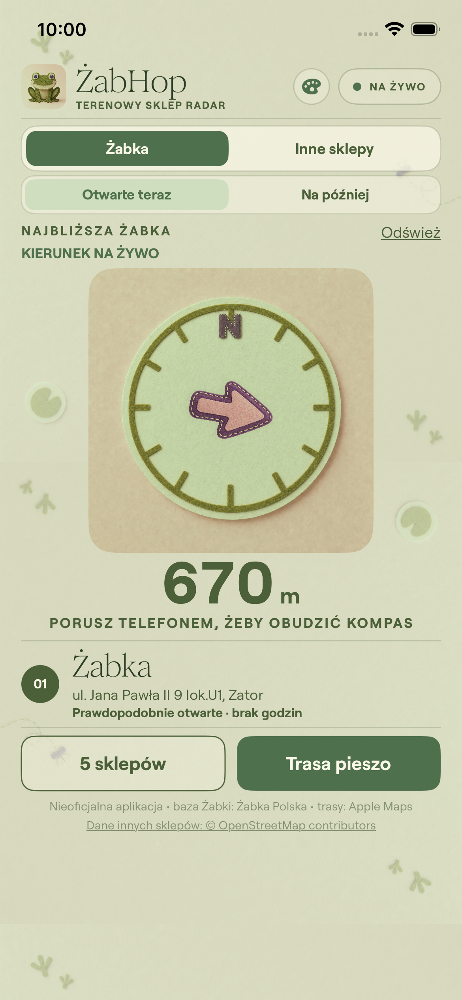
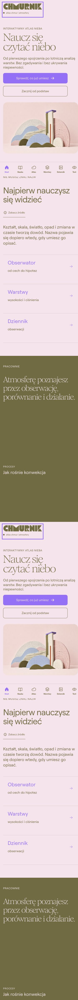
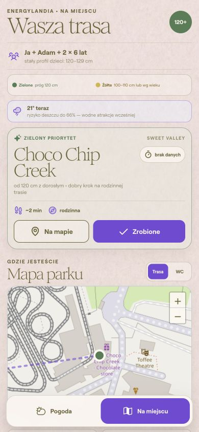
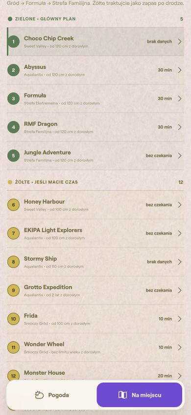

Wspólne cechy oceniane: papierowo-filcowa faktura, oliwkowa typografia, fiolet jako kolor działania, duże nagłówki szeryfowe, obłe karty, czytelna dolna nawigacja i kompaktowa gęstość treści na telefonie.